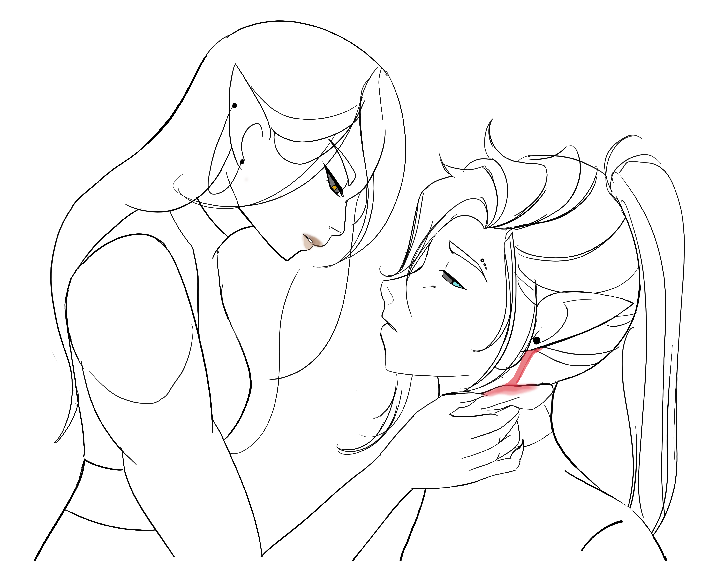

“What the-!?”
Your nails cut into his flesh, but you are too late, the stone was already midair, careening towards an unsuspecting Ulf'ren.
Well...
If you can't prevent the situation, you'll make sure to finish it. Thankfully, you have surprise on your side. Swiftly, you pull forward and sweep your legs under his. You are able to use his body weight against him as he crashes into the ground. Leaving little time for the others to react, you quick release your axe, kick his body so he's facing up and bring the blade down to his throat as a threat. You move too quickly to get a look at his face, but you think that the impact with the ground managed to break his nose as you catch the bewildered look on a bloodied face. You look towards the other two.
“Woah- woah - woah, that's enough we can talk this out!”
“I think you should leave now.”
You pull back your axe from their friend's throat and back away. You turn the axe such that it looks
non-threatening but is still easy to shift its weight if an attack is needed.
They rush forward to pick up their friend. Yelling curses, one of them manages to shift their friend on
their back, then disperse.
You are glad this ended quickly, but you feel a slight tinge of disappointment. You could have used them to
work out a bit of frustration. But you have more important
matters to attend to. You look towards Ulf'ren. Even from this distance you could see crimson streaming from
the side of his head. He looks dizzied and hunched over.
You approach and see that he's stooped over bolbaena blooms that he must've dropped. His eyes are avert as
he shifts uncomfortably when you kneel near him.
“Here… let me help…”
You don't wait for a response as you help to salvage what blooms you can. Remarkably, six survived the stone that fell after impact. How did he find so many!?
“Thanks...”
“Hey, just take a second to relax. If it's ok, I have some supplies to dress the wound, but I have to touch you…”
You pull out a pouch attached to your overskirt and show him some basic cloth bandages and light weight
healer's
kit.
He sits in a more comfortable position and nods.
You work quickly, grabbing his face in your hand, you tilt his head to get a decent look at it. Thankfully
there's just a thin gash, though there's a lot of blood, the cut
is shallow.
“This might sting…”
He barely winces as you pour the disinfectant tincture, clean his neck, then his ear, in silence.

Once you are finished, you look over your work, not so bad.
This is probably the first time you've treated someone other than yourself outside of basic medical
training.
“I don't know what to say…”
“Didn't you hear them yell at you?”
“Honestly I think I was a little too focused?”
“You think?...”
“What can I say.. when I'm on the trail I kinda let go, you know?”
He gives an apologetic toothy grin. You think you read a bit of sadness in the expression
“You should be more careful. I don't understand how you guys come out here unarmed and without medical supplies. It's too late to be caught out like that. What if it was something worse?”
“Normally this side of the woods isn't this… dangerous,”
You are unamused. As you assume he notices as his laughter dies.
“I get your point.”
You suddenly feel bad but aren't sure why. Maybe it's because you realize you should be looking for your own
blooms. It's frustrating how behind you are.
“Alright, well, I guess I'll get going. Just be more aware.”
You go to get up. As you do, Ulf'ren grabs your wrist. A chill runs down your spine and you yank it back.
“Oh shoot, I'm sorry, I just meant to ask you to wait. You don't like being touched right? #$^% I forgot.”
You don't remember explicitly telling him this but maybe he inferred it from what you said earlier? Your heart feels like it's beating a little bit faster. It kind of feels like your fight or flight is kicking in.
“Yeah, I should go now…”
“Um, wait, I can… I can help you find some of the blooms. It's the only way I can think of to repay you…”
He'd really do that? But you don't feel like what you've done in enough payment for this type of agreement.
A
transaction in the fey should be as equitable as possible…
A debt can have disastrous consequences.
Mulling it over you decide…